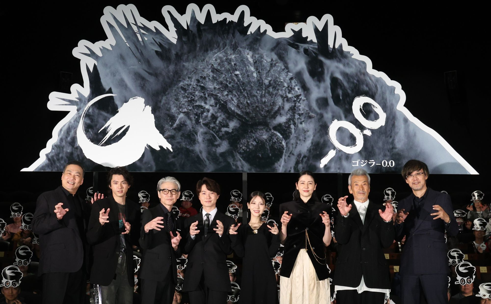
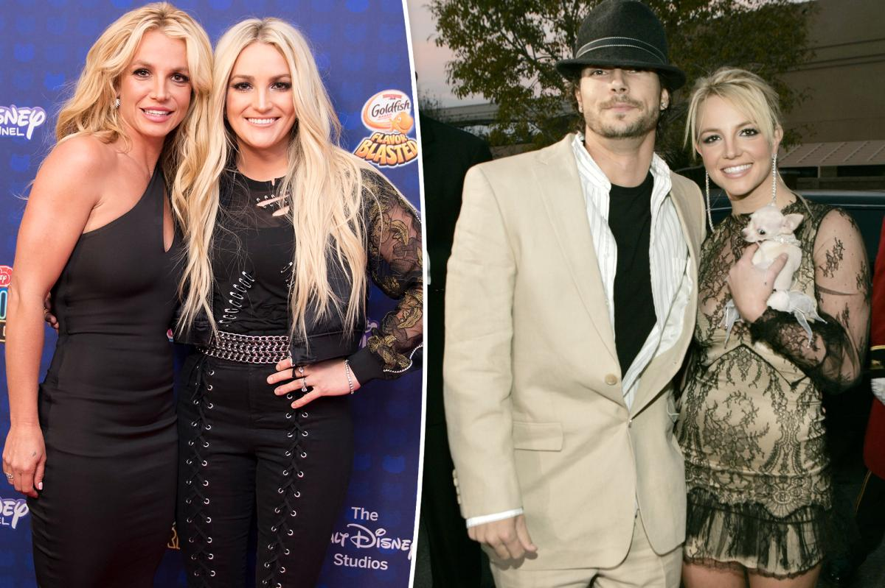
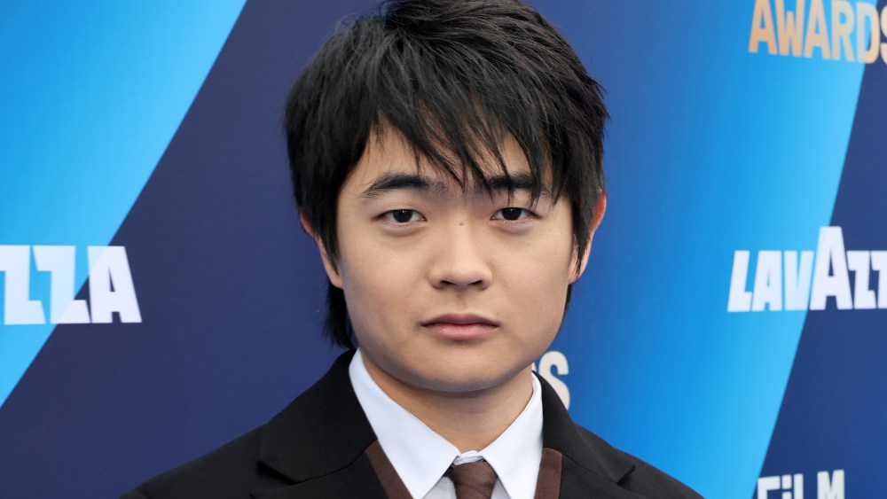

Godzilla Minus Zero opens in Japan at twice the pace of Minus One

Takashi Yamazaki’s sequel to the Oscar-winning Godzilla Minus One opened on 448 screens across Japan on Tuesday. Toho says that by 11 a.m. it was running at 201% of Minus One’s opening day, and that figure doesn’t count the midnight IMAX shows. Minus One went on to earn ¥7.65 billion in Japan, and this one looks set to beat it easily.
At the Tokyo premiere, star Ryunosuke Kamiki said simply, “Twice as much? I’m nothing but grateful,” and Yamazaki said he hasn’t been able to stop searching for reactions online since the night before. The film is set two years after the first, as a new threat hits a Japan that has barely recovered. North America gets IMAX early-access screenings tonight for Godzilla Day, and the wide release from GKIDS follows on Friday, November 6.
 Official Trailer 2 on YouTube →
·
Eiga.com (Japanese) →
·
Official Trailer 2 on YouTube →
·
Eiga.com (Japanese) →
·
 AP review →
AP review →
Britney Spears turns on Jamie Lynn and Kevin Federline: “I will find a new family”

In a Sunday Instagram post captioned with a still of Dakota Fanning flipping the bird in Uptown Girls, Spears claimed her sister never once let her hold niece Ivey during two-week visits to Louisiana during COVID, and that Federline wouldn’t let her use the bathroom when she picked up their sons at his house.
“They made me feel like a slave and have all their secret things they did behind my back and all I ever did was work for my dad!!!” she wrote. Neither Jamie Lynn nor Federline has responded. The post comes days after Page Six reported that Federline owes more than $117,000 to City National Bank.
Netflix’s East of Eden is growing almost as fast as Adolescence did
Zoe Kazan’s Steinbeck adaptation, starring Florence Pugh as Cathy Ames, had the softest No. 1 debut on Netflix since March, with 6.5 million views. Four weeks later it’s at 28.9 million, 4.4 times its first week. Among recent limited series that stayed in the Top 10 for four straight weeks, only Adolescence (4.7 times) grew faster.
It’s spreading off-screen too. Penguin says sales of the novel are up nearly 200% after 25 reprints this year, Spotify audiobook first listens are up 156%, and Cathy was a popular Halloween costume on TikTok. Netflix says Pride and Prejudice in December and The Age of Innocence next year are next, and Kazan is now adapting Lonesome Dove.
Karate Kid star Ben Wang is in talks to play Iceman in Marvel’s X-Men

Wang, who led Karate Kid: Legends and plays District 12 tribute Wyatt Callow in The Hunger Games: Sunrise on the Reaping (out November 20), is negotiating to play Bobby Drake, one of the founding X-Men. He’d join Sadie Sink as Jean Grey, Kit Connor as Cyclops, Inde Navarrette as Rogue, Christopher Abbott as Professor X and Adam Driver as Mr. Sinister.
Jake Schreier (Thunderbolts*) directs the reboot, the mutants’ first film under Marvel Studios, for release on May 5, 2028. There’s no X-Men trailer yet, so the link below is the latest Sunrise on the Reaping trailer.
Bottom of the news
- Jessica Alba deleted Halloween photos of herself as a bloodied Nancy Kerrigan after backlash, the second costume controversy of the weekend after Martha Stewart’s.
- Russell Brand’s defense closed by telling jurors that living “a highly promiscuous life is entirely lawful”; the jury now weighs seven counts and must be unanimous.
- Ellen DeGeneres paid tribute to her longtime executive producer Matthew Wright, who died October 30, calling him “the glue” of The Ellen Show.
- Jack Harlow announced Sweet Action II, a seven-track sequel to his 2020 EP, out Friday with a Babyface feature.
- HBO renewed Sharon Horgan’s comedy Youth for a second season.
- The Rocky Horror Show extended on Broadway through May 2027, with Margaret Cho making her Broadway debut as the Narrator.
- Rajinikanth’s Jailer 2 passed ₹800 crore worldwide, the highest-grossing Tamil film ever, while Ramayana: Part 1 won anti-piracy protection ahead of its November 5 release.